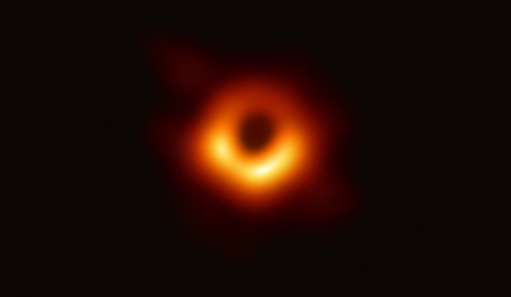
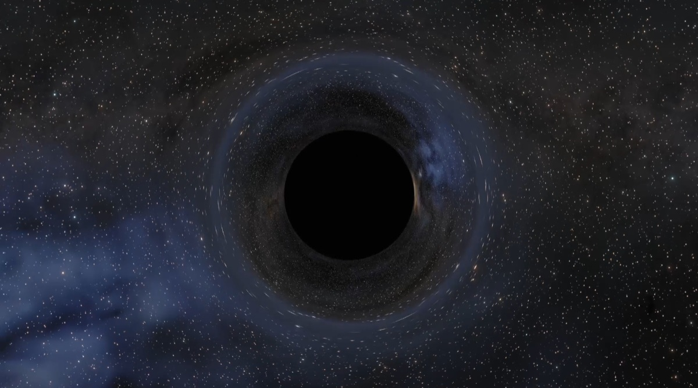

M87*
The first black hole ever photographed by the Event Horizon Telescope in 2019.
📸 Image Credit: NASA SCIENCE.

Sagittarius A*
The supermassive black hole at the center of our Milky Way Galaxy.
📸 Image Credit: NASA SCIENCE.

NASA Simulation
A computer simulation showing how a black hole bends light around itself.
📸 Image Credit: NASA SCIENCE.

Accretion Disk
Hot gas and dust swirling around a black hole before crossing the event horizon.
📸 Image Credit: NASA SCIENCE.